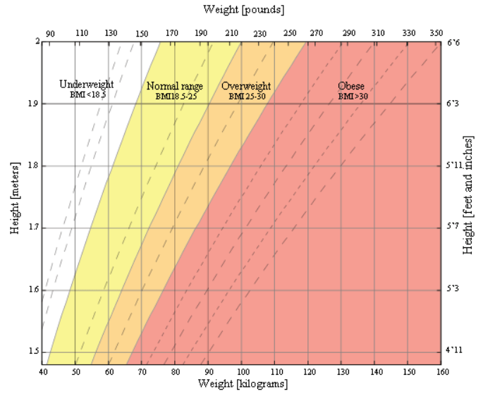

BMI Calculator
BMI Formula
Below are the equations used for calculating BMI in the International System of Units (SI) and the US customary system (USC) using a 5'10", 160-pound individual as an example:
USC Units:
BMI = 703*
mass (lbs)/
height2 (in)
= 703*
160/
702
= 23.0
SI, Metric Units:
BMI =
mass (kg)/
height2 (m)
=
72.57/
1.7782
= 23.0

Limitations of BMI
Although BMI is a widely used and useful indicator of healthy body weight, it does have its limitations. BMI is only an estimate that cannot take body composition into account. Due to a wide variety of body types as well as distribution of muscle, bone mass, and fat, BMI should be considered along with other measurements rather than being used as the sole method for determining a person's healthy body weight.
In adults:
BMI cannot be fully accurate because it is a measure of excess body weight, rather than excess body fat. BMI is further influenced by factors such as age, sex, ethnicity, muscle mass, body fat, and activity level, among others. For example, an older person who is considered a healthy weight, but is completely inactive in their daily life may have significant amounts of excess body fat even though they are not heavy. This would be considered unhealthy, while a younger person with higher muscle composition of the same BMI would be considered healthy. In athletes, particularly bodybuilders who would be considered overweight due to muscle being heavier than fat, it is entirely possible that they are actually at a healthy weight for their body composition. Generally, according to the CDC:
- Older adults tend to have more body fat than younger adults with the same BMI.
- Women tend to have more body fat than men for an equivalent BMI.
- Muscular individuals and highly trained athletes may have higher BMIs due to large muscle mass.
The same factors that limit the efficacy of BMI for adults can also apply to children and adolescents. Additionally, height and level of sexual maturation can influence BMI and body fat among children. BMI is a better indicator of excess body fat for obese children than it is for overweight children, whose BMI could be a result of increased levels of either fat or fat-free mass (all body components except for fat, which includes water, organs, muscle, etc.). In thin children, the difference in BMI can also be due to fat-free mass.
That being said, BMI is fairly indicative of body fat for 90-95% of the population, and can effectively be used along with other measures to help determine an individual's healthy body weight.
BMI Introduction
BMI is a measurement of a person's leanness or corpulence based on their height and weight, and is intended to quantify tissue mass. It is widely used as a general indicator of whether a person has a healthy body weight for their height. Specifically, the value obtained from the calculation of BMI is used to categorize whether a person is underweight, normal weight, overweight, or obese depending on what range the value falls between. These ranges of BMI vary based on factors such as region and age, and are sometimes further divided into subcategories such as severely underweight or very severely obese. Being overweight or underweight can have significant health effects, so while BMI is an imperfect measure of healthy body weight, it is a useful indicator of whether any additional testing or action is required. Refer to the table below to see the different categories based on BMI that are used by the calculator.
BMI table for adults
This is the World Health Organization's (WHO) recommended body weight based on BMI values for adults. It is used for both men and women, age 20 or older.
| Classification | BMI range - kg/m² |
|---|---|
| Severe Thinness | < 16 |
| Moderate Thinness | 16 - 17 |
| Mild Thinness | 17 - 18.5 |
| Normal | 18.5 - 25 |
| Overweight | 25 - 30 |
| Obese Class I | 30 - 35 |
| Obese Class II | 35 - 40 |
| Obese Class III | > 40 |
BMI chart for adults
This is a graph of BMI categories based on the World Health Organization data. The dashed lines represent subdivisions within a major categorization.
BMI table for children and teens, age 2-20
The Centers for Disease Control and Prevention (CDC) recommends BMI categorization for children and teens between age 2 and 20.
| Category | Percentile Range |
|---|---|
| Underweight | <5% |
| Healthy Weight | 5%-85% |
| At rist of Overweight | 85%-95% |
| Overweight | >95% |